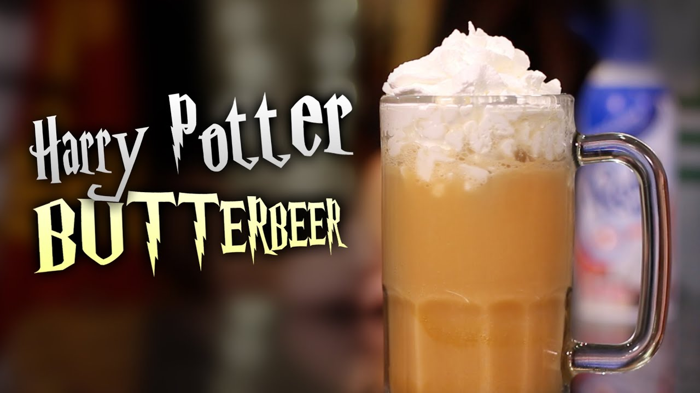

Butter Beer

A magical drink from a magical place
A delectible creamy soda
Ingredients
- 2 liters cream soda chilled
- 1/4 teaspoon caramel extract
- 1/4 teaspoon butter extract
- 1 cup heavy whipping cream
- 1/2 cup butterscotch topping
- 1/4 cup powdered sugar
Recipe Instructions
- In large mixing bowl, whip heavy cream until it forms stiff peaks.
- Add butterscotch topping and powdered sugar.
- Mix the caramel and butter extracts with the cream soda and then pour the mixture into clear cups or mugs.
- Top with butterscotch cream topping and enjoy!
Return to main page